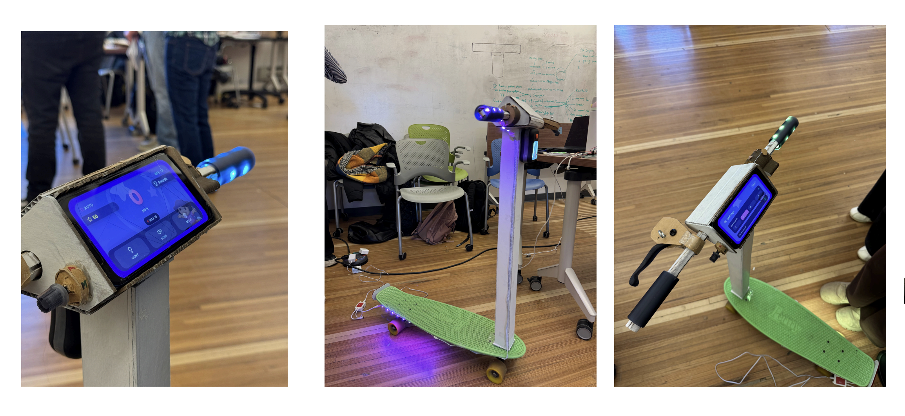
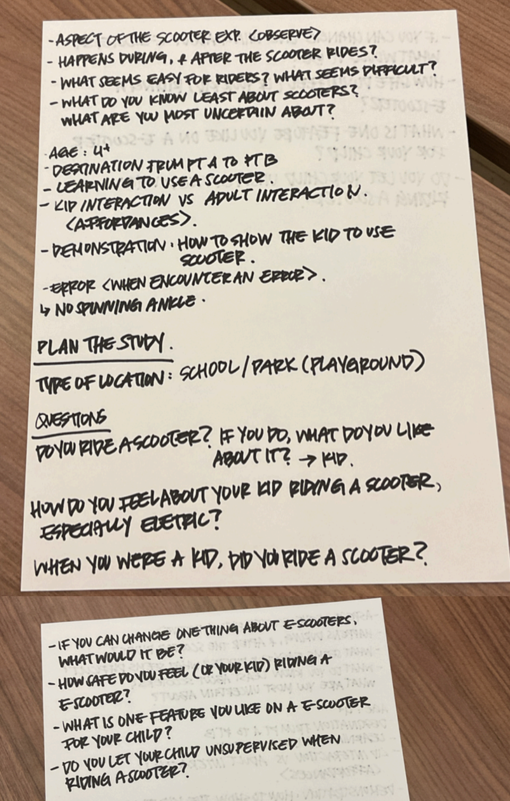
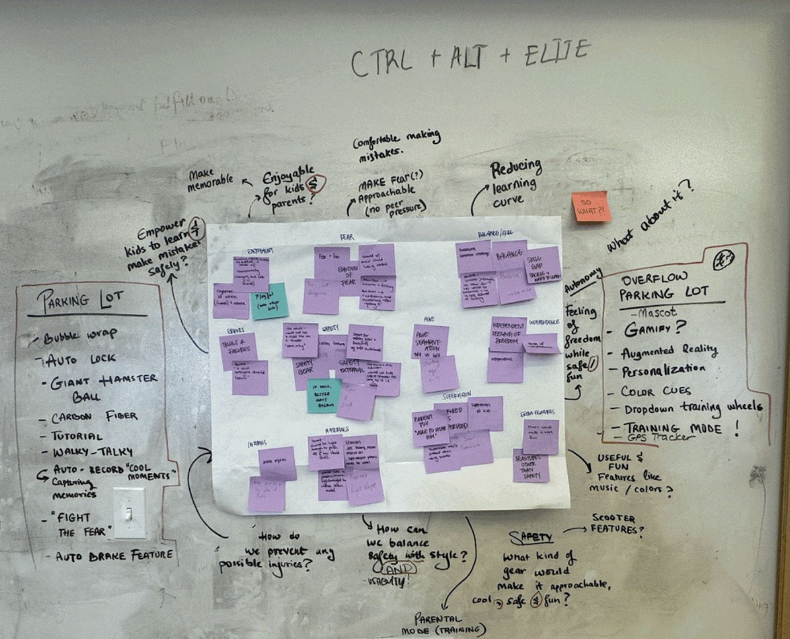
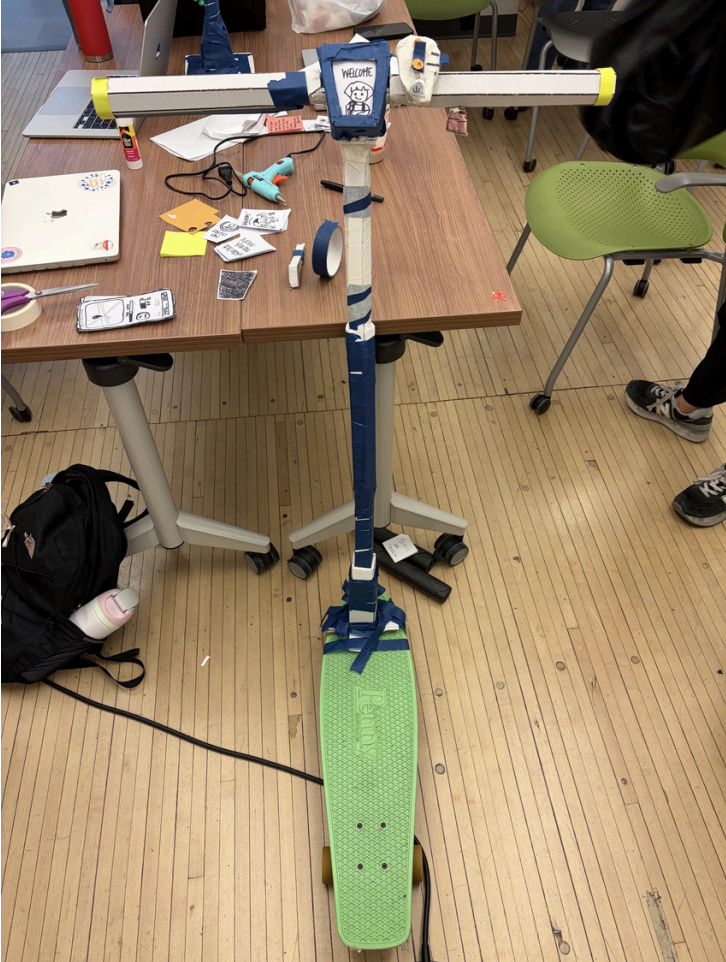
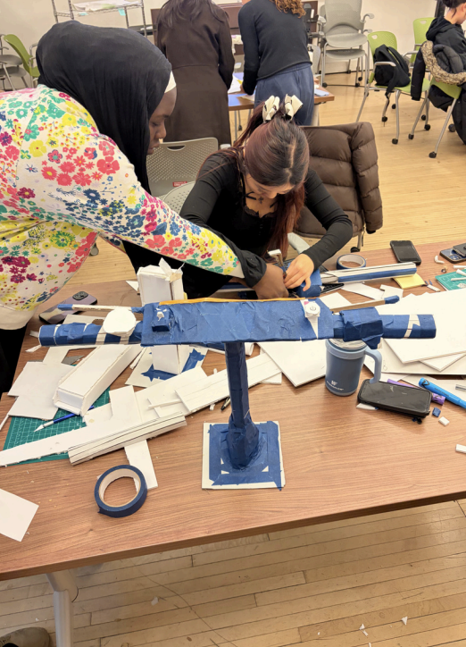
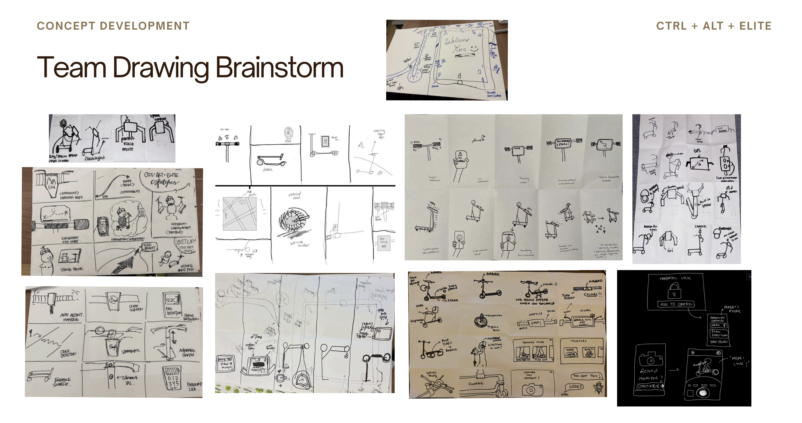
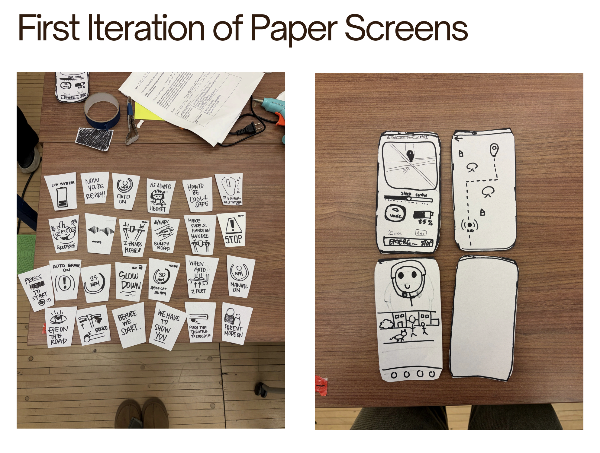
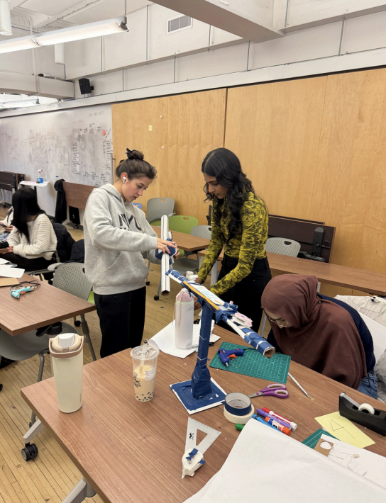

Electric Scooters for Kids
A product design and prototyping project exploring safer, confidence-building micro-mobility for younger riders.
Executive Summary
- Safety-centered product design and physical prototyping project. Every decision was anchored to 4 critical ride scenarios mapped across 8 weeks of research
- 3 prototype iterations validated control placement against real handling behavior, ensuring design decisions held up against how children actually ride, not just how designers assumed they would
- Reframed the brief from adapting adult scooter conventions to designing from first principles around child proportions, balance confidence, and braking instinct
Context
Existing electric scooters are typically designed around adult proportions and assumptions. This project examined what changes when the rider is a child: balance confidence, control accessibility, braking feedback, and physical fit all become central design constraints.

Challenge
- Reduce wobble risk and improve rider confidence during start, stop, and turning moments.
- Design controls children can understand quickly and reach comfortably.
- Balance product excitement with responsible speed and stability constraints.
The biggest tension was between fun and safety. Decisions around bar height, deck proportion, and control placement had direct influence on posture, reaction time, and perceived control, so each iteration was tested against real handling behavior rather than aesthetics alone.




Process & Design Decisions
- Mapped key ride scenarios and failure points (mounting, braking, cornering, dismount).
- Iterated on steering geometry and grip positioning for better control feedback.
- Used physical prototyping and structured critique loops to converge on a safer form.
The resulting concept emphasized intuitive control zones, improved stance stability, and clear tactile differentiation for interaction points. The design intentionally favors predictable handling over aggressive performance.



Outcomes
- Developed a prototype direction grounded in child-specific ergonomics.
- Improved decision-making framework for balancing usability, safety, and product appeal.
- Produced documentation and rationale supporting future engineering refinement.